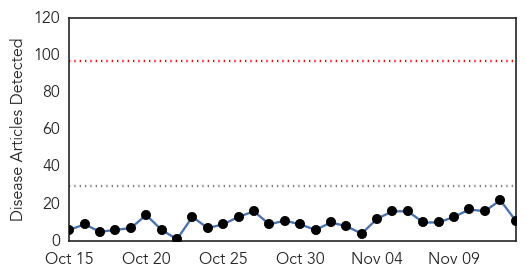
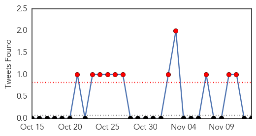
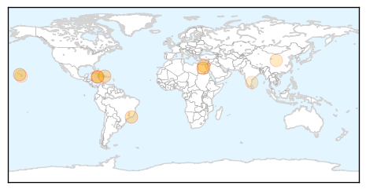
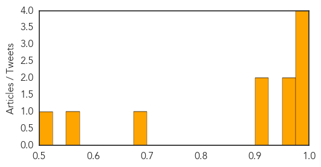
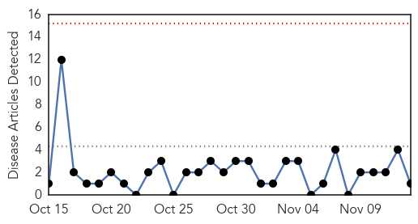
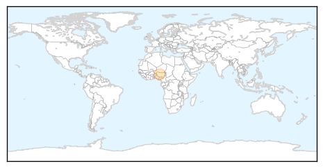

Dengue Fever
30-Day Web Trend
0 alerts, 0 warnings

30-Day Twitter Trend
5 alerts, 3 warnings

Article Locations
Article Confidences
Top Articles:
- 0.996
- Egypt: Dengue outbreak reported in Assiut Governorate
- 0.994
- 107 cases of dengue fever confirmed on Hawaii Island
- 0.989
- Egypt: Dengue Fever – Egypt
- 0.987
- Dengue menace under control, claim authorities
- 0.955
- Health Ministry urges vigilance as Zika virus confirmed in C'bean
- 0.953
- Health ministry urges Jamaicans to be vigilant, Zika virus detected in region
- 0.920
- Are Mosquitoes Behind an Increase in Brazilian Babies Born with Abnormally Small Heads?
- 0.915
- Zika virus reaches the Caribbean Community
- 0.700
- How can Africa prepare for El Niño?
- 0.561
- Minister holds meeting with builders
- 0.510
- Fever raises questions for South Kona residents
Top Tweets:
-
No tweets found for Nov 13, 2015
Measles
30-Day Web Trend
0 alerts, 0 warnings

30-Day Twitter Trend
0 alerts, 0 warnings

Article Locations
Article Confidences

Top Articles:
Top Tweets:
-
No tweets found for Nov 13, 2015